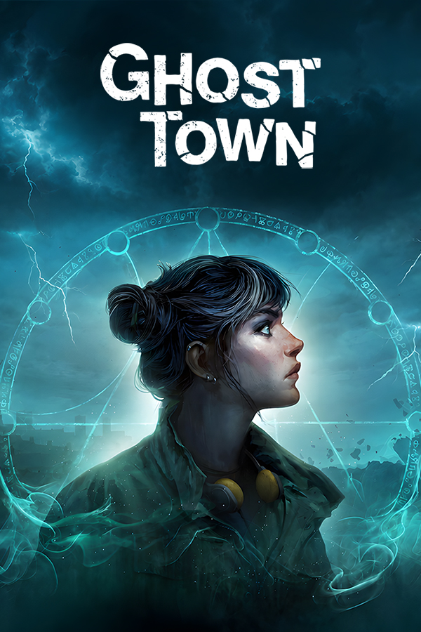

Game profile

Ghost Town
Every archived year-end list appearance, including placement and points earned.
2List appearances
1Years represented
Points by Year
22025 points
List History
| Year | Source | List | Placement | Points |
|---|---|---|---|---|
| 2025 | Eurogamer | The 50 best games of 2025, ranked | 39 | 1 |
| 2025 | NPR | The best games of 2025, picked by NPR's staff | Unranked | 1 |